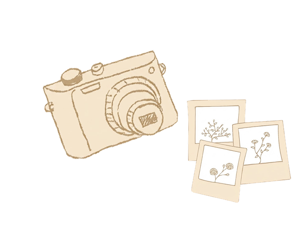

Instant foto er et vidnesbyrd om livet. Det hele startede tilbage i 1940'erne. Edwin Land fotograferede livets begivenheder, og en dag på stranden med sin 3-årige datter, gjorde hun opmærksom på, at hun ville se billederne med det samme! Edwin satte sig selv en stor opgave: At opfinde en film, der kunne fremkalde sig selv.
Hurtigt. Et halvt årti senere etablerede Edwin Land virksomheden Polaroid, som nu om dage nærmest er synonymt med Instant foto. Instant foto blev til en omfattende forretning i 70'erne og 80'erne, indtil den digitale æra næsten slog hele branchen ihjel. Nu er instant foto stærkt på vej tilbage.
